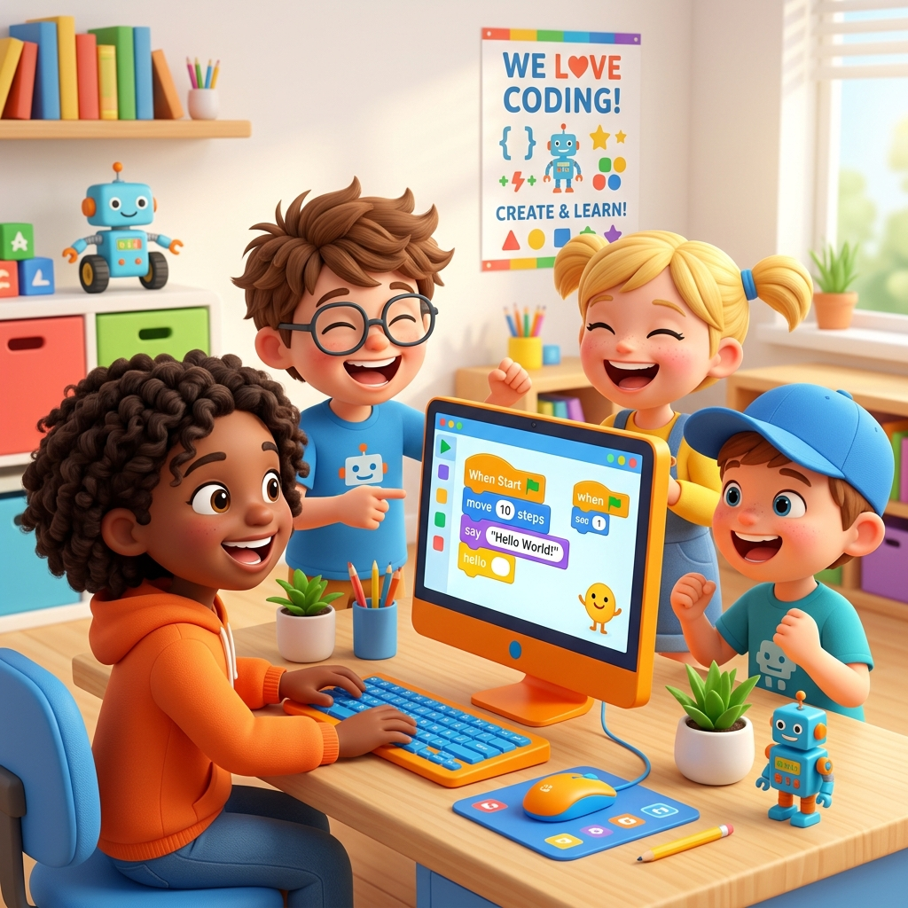

Educación Digital
desde la Infancia.
Aprendiendo
Informática y
Clics Jugando.
Peques Clics es una propuesta pedagógica innovadora diseñada para acompañar a los niños de 4, 5 y 6 años en el aprendizaje y la iniciación tecnológica. Su enfoque se centra en la adaptación gradual y en fomentar la confianza necesaria para que los pequeños exploren las herramientas digitales desde una perspectiva responsable, segura y de buen uso.

¿Qué es Peques Clics?
Peques Clics es una propuesta pedagógica innovadora diseñada para acompañar a los niños de 4, 5 y 6 años en el aprendizaje y la iniciación tecnológica. Su enfoque se centra en la adaptación gradual y en fomentar la confianza necesaria para que los pequeños exploren las herramientas digitales desde una perspectiva responsable, segura y de buen uso.
Creemos que la educación tecnológica no debe esperar a la secundaria. Con el método correcto, los más pequeños pueden explorar el pensamiento computacional, la creatividad digital y la lógica de forma natural y significativa.
Niños aprendiendo tecnología
Tres Caminos de Aprendizaje
Cada nivel está diseñado respetando la etapa de desarrollo del niño, con actividades, herramientas y objetivos adaptados a su edad.
Sala de 4 Años
Los pequeños exploradores dan sus primeros pasos en el mundo digital descubriendo la computadora como una herramienta mágica de creación.
Ver Currículum → 👦 CreadoresSala de 5 Años
Los creadores comienzan a construir, diseñar y pensar lógicamente. Aprenden a usar herramientas digitales para expresar su creatividad.
Ver Currículum → 🚀 Tecleadores1er Grado
Los tecleadores dominan el teclado, crean sus primeros proyectos digitales e introducen conceptos básicos del pensamiento computacional.
Ver Currículum →Impulsando el Futuro Digital
Marcas y colegios que creen en la educación tecnológica desde la primera infancia.